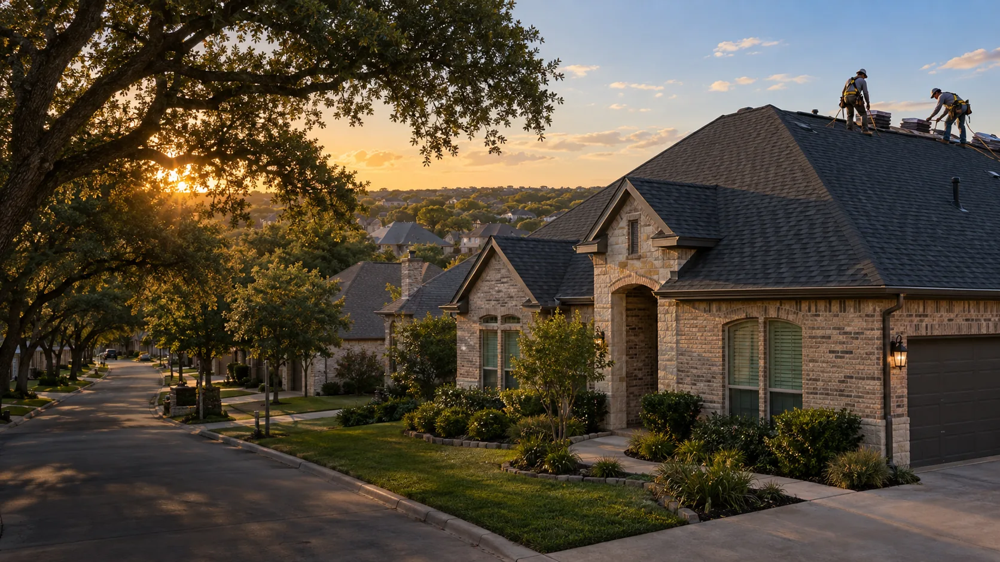
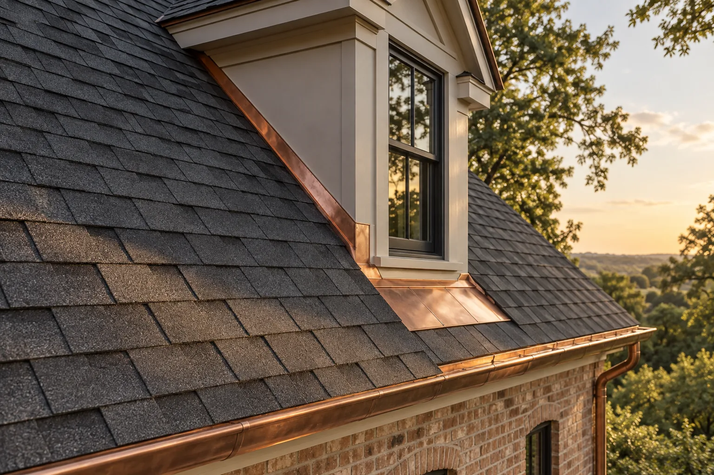

Built to weather
what comes next.
A better roof starts with a better conversation. Explore the work, the details, and the decisions behind every lasting exterior.
Protection you can see.
Care you can feel.
From the first inspection to the last detail at the curb, good work should be easy to understand. Look closer, compare the change, and see what goes into an exterior built to last.
Texas + Arizona concept
The difference
is in the details.
Explore six illustrative project stories. Move the slider on any project to compare its before and after views.
Concept portfolio: locations, project descriptions, and before/after imagery are illustrative. Replace with documented customer work before using commercially.
 THE CRAFT, UP CLOSE
THE CRAFT, UP CLOSEThe small things
are the big things.
Flashing, ventilation, drainage, underlayment. What you cannot see from the street is often what makes the difference years down the line.
Start with a clear assessment, photographs, and a scope that makes sense.
Choose the right materials and details for the home and its climate.
Finish the edges, clear the site, and walk through the result together.
Every exterior,
considered.
A practical set of services, thoughtfully connected. Select a service to explore the work behind it.

A roof made for the long haul.
From shingle selection to ventilation and clean flashing, a complete replacement should solve the whole system, not just refresh the surface.
Explore roof projects ↗Local understanding.
A wider view.
Explore the sample service footprint. Select a state or a city to see a local project. Locations shown are part of this website concept.
Credentials should
mean something.
A finished contractor site should link to credentials customers can verify. These are examples of established programs, not claims of IronStar membership.
CORNINGContractor networkExplore program ↗CertainTeedTraining programsExplore program ↗NRCA✳Industry membershipExplore program ↗IKOROOFPROContractor programExplore program ↗
Names are typeset for this demo, not official logos. No certification, endorsement, or membership is asserted. Add verified certificates and approved logos for a real contractor.
Let's make what
comes next better.
Bring the issue, the idea, or just a few questions. The right conversation is where the best projects start.
Start a conversation ↗Concept contact link. Replace with the contractor's actual details before launch.